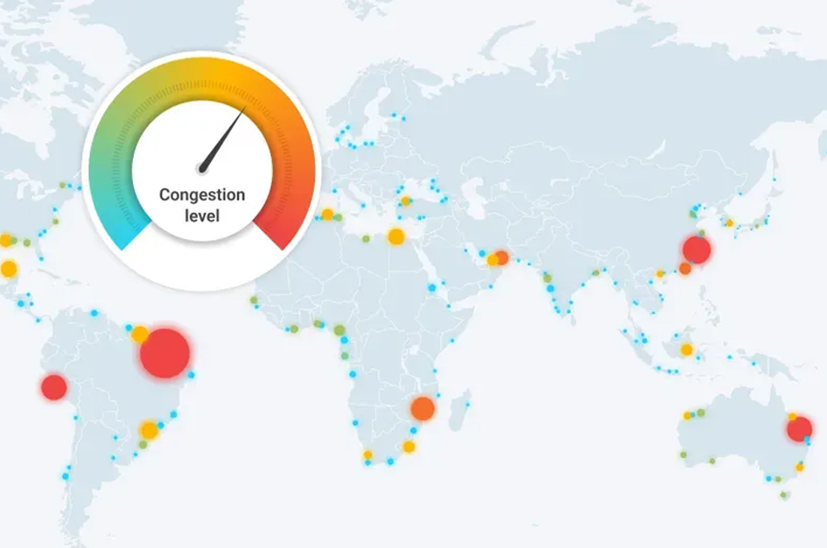
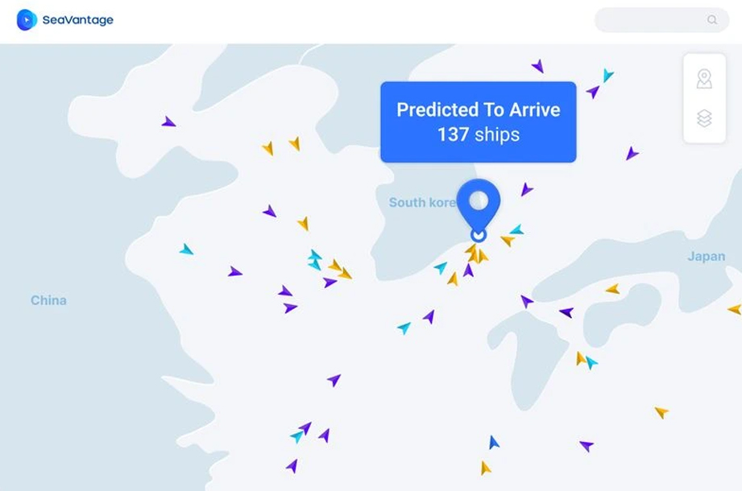
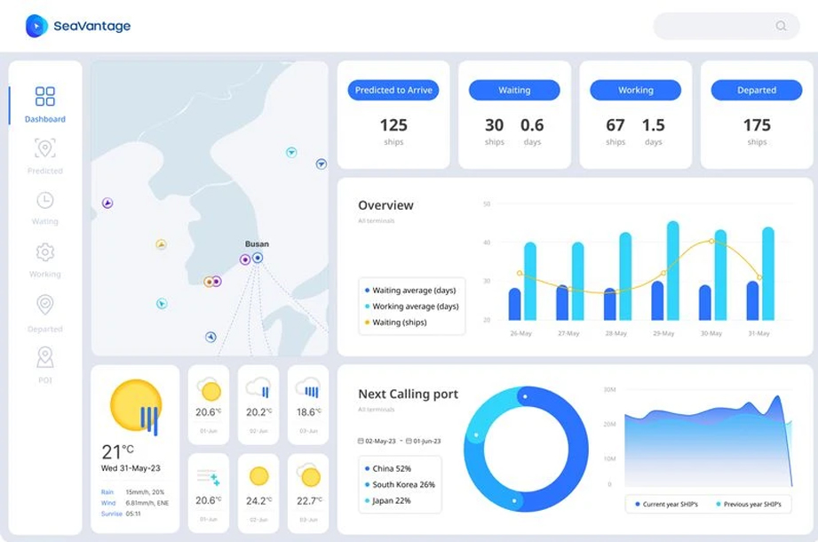

Port Insight
터미널 및 선석단위로 제공되는 정보는 접안시간 및 화물의 하역 시간을 예측할 수 있도록 도와줍니다.
Port Insight를 통해 전세계 주요 항구의
혼잡상황을 실시간으로 확인할 수 있습니다.
-

실시간으로 항구 작업 현황 및
혼잡도를 확인하세요작업중인 선박들과 평균 작업시간을 터미널/선종 단위로
확인할 수 있어 하역 이후 일정을 효율적으로 계획할 수 있습니다. -

입항
선박 예측실시간으로 항구를 향해 오고 있는 선박을 확인하여
항구 혼잡도를 예측할 수 있으며,
접안 예정 및 작업 중인 선박과 다른 항구로 이동한
모든 선박을 확인할 수 있습니다. -

항구 및 터미널 통계 데이터
항구 정체에 관련된 통계 정보를 기간별로 분석 할 수 있습니다.
통계 데이터를 통해 앞으로의 상황을 예측하고
화물의 종류에 따라서는 경쟁사 분석에도
활용할 수 있습니다.
항구 분석 데이터로
효율적인 물류계획을 세워보세요!
-
효율적인 계획 지원
항구의 혼잡 상황 정보를 통해 앞으로의 혼잡을 예측해 보고 효율적인 물류계획 또는 차터링 등의 계획을 수립하는데 도움을 줄 수 있습니다.
-
이벤트에 대한 적시 대응
사건, 사고 등의 이벤트로 인해 지연 상황이 발생할 경우 실시간 정보를 통해 혼란 상황을 적시에 대응할 수 있습니다.
-
불필요한 물류 비용 절감
항구의 혼잡 상황을 확인하여 과도한 연료비와 수수료 등의 비용을 줄일 수 있습니다.